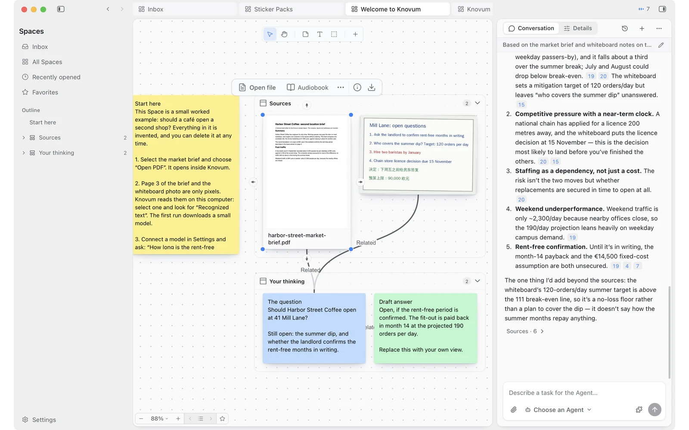

Arrange without a fixed template
Use sections, groups, tags, an outline, and Saved Views to organize material in the way the work needs.
A calm, capable space for your most important work.
Explore the latest releaseThe Knovum workspace
Knovum brings your source material, working thoughts, and emerging ideas into one visual environment. Not another inbox. A place to make sense of what you collect.

Spaces & canvas
A Space is a durable environment for a subject, project, or line of inquiry. Its canvas can hold notes, webpages, PDFs, Office documents, images, audio, video, code, and ordinary files side by side.
Use sections, groups, tags, an outline, and Saved Views to organize material in the way the work needs.
Read documents, review media, and work with notes without splitting your context across disconnected tools.
Exchange canvases through the open JSON Canvas format, or package a complete Space as a portable .knovumspace file.
A Space is more than a folder.
A canvas gives your work room to evolve. Connections can stay visible without turning every thought into a rigid system.

Questions & sources
Ask a connected model about your own material. Knovum keeps citations attached to the source location — not just a document name — so you can inspect the passage behind an answer.
Follow a citation to a passage in a note, a page in a PDF, or a time range in a recording.
Citations are tied to the source revision they quote. If a source changes, a citation can become detached instead of silently pointing elsewhere.
Generated answers are a starting point for inspection, not a substitute for checking the underlying material.
Product image tour
Automatically loops through the workspace, citations, search, and creation tools.
Search & structure
Knovum combines keyword and semantic search across a Space or your whole library. As your material grows, you can also express what it means with typed knowledge objects and relationships.
Creation & derivation
Select material in a Space and turn it into a new resource: a document, image, video, subtitle file, or voice track. Knovum records the sources, revisions, action, and model used for each derivation.
Summarize, compare, visualize, extract, create subtitles, or turn selected material into a deliverable.
The new resource returns to the Space, where it can be edited, searched, connected, exported, and reused.
Review source revisions, operation details, and model information instead of treating generated output as unexplained fact.
More of your work, in one place
Rich notes, Markdown, PDFs, Office files, images, audio, video, and code share the same Space.
Transcribe recordings with timestamps and speaker labels, create narration, and work with subtitles and audio.
Export notes and captures to DOCX, PDF, PPTX, HTML, Markdown, and TXT.
Work with desktop Agents through ACP, expose a Space through a loopback-only MCP server, or connect outbound MCP servers.
Knovum is a desktop workspace, designed for focused work on macOS and Windows. See platform requirements